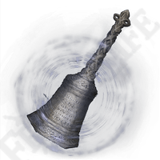
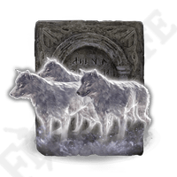
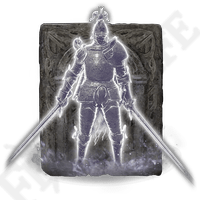
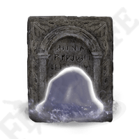

Valik Spirit Summoneid

Spirit Calling Bell
1000 Runes
Püha kelluke, mis võimaldab Tarnished’il kutsuda vaime lahingusse.

Lone Wolf Ashes
700 Runes
Kutsuvad esile kolm ustavat hunti, kes ründavad vaenlasi kiirelt ja halastamatult.

Banished Knight Oleg
1200 Runes
Tugev rüütel, kes seisab Tarnished’i kõrval ja kaitseb teda raskes lahingus.

Mimic Tear Ashes
2000 Runes
Kutsutud vaim kopeerib Tarnished’i varustuse ja oskused, luues võimsa liitlase.